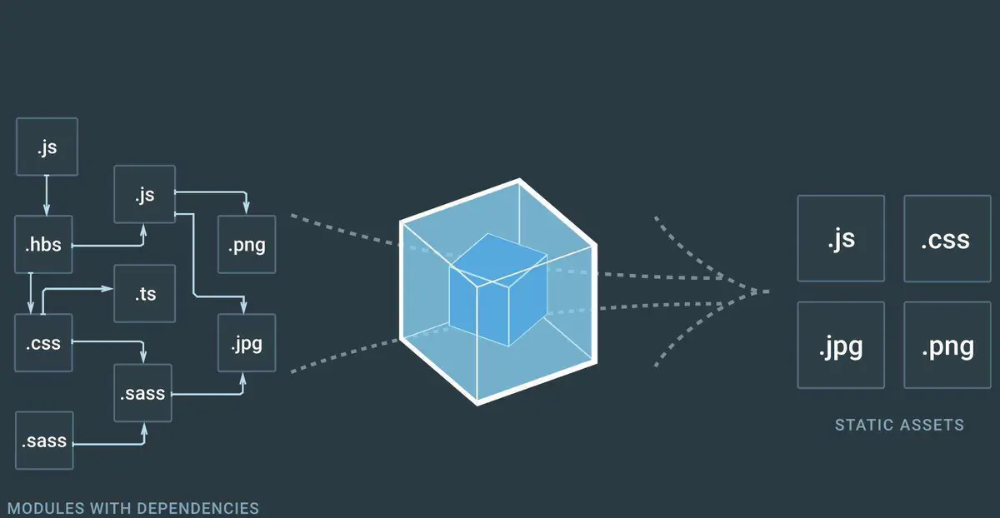

此篇分享为 vue-cli2.0 中 webpack 的优化配置。

按需引入组件
示例一：按需引入element
参考https://element.eleme.cn/#/zh-CN/component/quickstart
借助 babel-plugin-component，我们可以只引入需要的组件，以达到减小项目体积的目的。
首先，安装 babel-plugin-component：
1 | npm install babel-plugin-component -D |
然后，将ui/.babelrc修改成：
1 | { |
接下来，我们框架默认是，那么需要在 main.js 中写入以下内容：
我们目前框架使用了element导航栏菜单，以下三个为必须：
1 | import { MenuItem, Menu, Submenu} from 'element-ui' |
完整组件列表和引入方式,（完整组件列表以 components.json 为准）
1 | import Vue from 'vue'; |
示例二：按需引入magicbox
1 | import Vue from 'vue' |
示例三：按需引入iview
借助插件 babel-plugin-import可以实现按需加载组件，减少文件体积。首先安装，并在文件 .babelrc 中配置：
1 | npm install babel-plugin-import --save-dev |
然后这样按需引入组件，就可以减小体积了：
1 | import { Button, Table } from 'view-design'; |
外部扩展externals属性
使用vue-cli创建项目，使用webpack打包。其中，有一个webpack插件webpack.optimize.CommonsChunkPlugin，它会将node_modules中的必需模块提取到vendor文件中，项目开发中，增加第三方模块，比如element-ui、vue-echarts等，vendor的包都会增大。这个时候，就需要考虑减轻vendor包的大小，增加构建速度。我们可以使用webpack的外部扩展(externals)功能。
externals配置选项，将指定的内容排除在构建的vendor中，但是，指定的内容需要出现在用户环境中。
用法
防止将某些 import的包打包到bundle中，而是在运行时(runtime)再去外部获取这些扩展依赖(external dependencies)
可以通过多种编写方式实现：string,array,object,function,regex。
1 | module.exports = { |
除了function形式，必须在array形式中，其他形式，都可以提升，直接作为externals属性使用。比如string形式：
1 | externals: { |
string
属性名称是jquery，表示应该排除import $ from 'jquery'中的 jquery模块。为了替换这个模块，jquery的值将被用来检索一个全局的$变量。换句话说，当设置为一个字符串时，它将被视为全局的，我们需要在全局变量中，找到$，才能使程序正确运行。
array
数组内的每一个元素都可以是多种形式，包括object, regex, function, string四种：
object
object形式，可以直接作为externals的值，这种形式是绝大部分项目中的配置形式。它里面一定是键值对（key: value)的形式。
function
function的使用，只能在array形式中作为一个元素传入。
regex
正则匹配的形式，通过传入正则表达式来实现匹配。这个可以放在数组形式中，也可以直接作为externals的属性。
示例
build/webpack.base.conf.js中
1 | module.exports = { |
index.html中引入
1 | <script src="https://unpkg.com/vue@2.6.11/dist/vue.min.js"></script> |
给定文件匹配范围
include 规定需要处理的文件有哪些
exclude 排除不需要处理的文件夹
1 | { |
noParse属性
webpack noParse作用主要是过滤不需要解析的文件，比如打包的时候依赖了三方库（jquery、lodash）等，而这些三方库里面没有其他依赖，可以通过配置noParse不去解析文件，提高打包效率。
需要在webpack.config.js 的 module节点添加noParse配置，多个以|分割
1 | module: { |
cacheDirectory 缓存属性
babel-loader提供了cacheDirectory选项参数，默认为false。
设置空或true时，会利用系统的临时文件夹缓存经过 babel 处理好的模块，对于 rebuild js 有着非常大的性能提升。
webpack.base.conf.js
1 | { |
If you like this blog or find it useful for you, you are welcome to comment on it. You are also welcome to share this blog, so that more people can participate in it. If the images used in the blog infringe your copyright, please contact the author to delete them. Thank you !